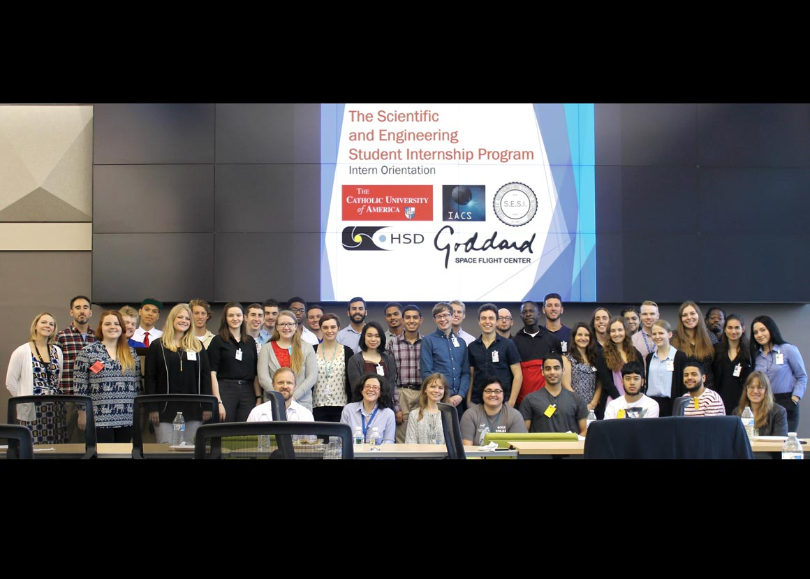
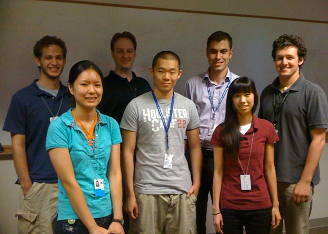
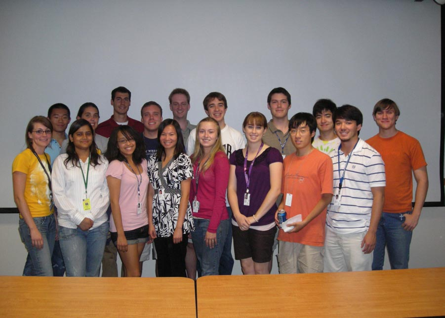
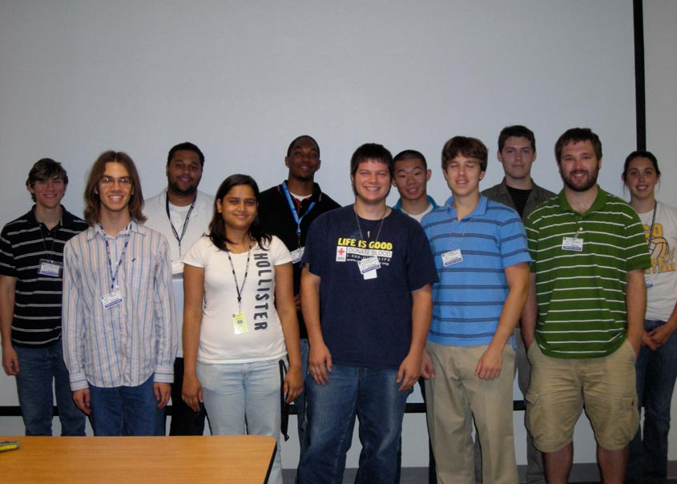

Welcome Interns
Hi, we are anxious to begin working with you!
(1 / 9) - 2018 SESI Summer Interns

2018 Caption
(2 / 9) - 2017 SESI Summer Interns

Our 2017 interns, some of their peers in the Heliophysics Division, Silvina, and Teresa pose with Dr.Bill Lapenta (center) and Ashley Burrell (leftmost) of NOAA's National Centers for Environmental Prediction (NCEP) during an intern exchange between their facility and our students at GSFC.
(3 / 9) - 2016 SESI Summer Interns

From right to left: Myo Thu Ya Aung (Queensborough Community College of The City University of New York), Dr. Richard Fisher (SESI Lecturer), Tun Myat (Queensborough Community College of The City University of New York), Albert Hsiung (University of California-Berkeley), Binh Le (Massachusetts Institute of Technology), Sean Malone (University of Maryland), Daniel Jiang (University of California Berkeley), Alexandra Wold (American University), Collin Van Son (Pennsylvania State University), Hayley Austin (Johns Hopkins University), Michael Greklek-McKeon (University of Maryland, College Park), Anna Voelker (The Ohio State University), Evan Frangipane (University of California, Berkeley), Amalia Gjerloev (University of Richmond), Bryan Yamashiro (University of Hawai'i).
(4 / 9) - 2014 SESI Summer Interns
Back Row (from left): Quincy Flint, Alexandra Angelo, Jenna Zink, Victoria Janus, Taylor Schiewe
Front Row (from left): Emily Sobel, Dhanesh Krishnarao, Sarah Bender
Front Row (from left): Emily Sobel, Dhanesh Krishnarao, Sarah Bender
(5 / 9) - 2013 SESI Summer Interns

Front Row (from left): Elise Donkor,Emily Sobel, Katya Gilbo, Kenton Miller, Dhanesh Krishnarao, Quincy Flint, Josh Bryant
Back Row (from left): Corey Koller, Zak Titus, RJ Aylward, Jack Lasota, Anthony Pritchard, Michel Romano, Nicholas Shield
Back Row (from left): Corey Koller, Zak Titus, RJ Aylward, Jack Lasota, Anthony Pritchard, Michel Romano, Nicholas Shield
(6 / 9) - 2012 SESI Summer Interns
Front Row (from left): Figen Oktem,Laura Dunlap, Andrea Karelitz, Ashley Jones
Middle Row (from left): Rachel Hetlyn, Albert Ryou, Tareq Alosh, Axel Burgos, Justin Boblit
Middle Row (from left): Rachel Hetlyn, Albert Ryou, Tareq Alosh, Axel Burgos, Justin Boblit
(7 / 9) - 2011 SESI Summer Interns

Front Row (from left): Natsuha Kuroda, Patrick Zhou, Claire Kuang
Back Row (from left): Nicholas Shields, John O'Neill, Tareq Alosh, Sam Schonfeld
Back Row (from left): Nicholas Shields, John O'Neill, Tareq Alosh, Sam Schonfeld
(8 / 9) - 2010 SESI Summer Interns

Front Row (from left): Shea Hess Webber, Nishu Karna, Samantha Sanders, Tina Henning, Caitlyn Quinn, Vanessa Napoli, Shawn Doria, John Yoritomo
Back Row (from left): Patrick Zhou, Katie Pazamickas, Adam Jacobs, Jeff Hatef, John O'Neill, Tim McEvoy, Richard Schaefer, Alex Takeda, Freddie Romano
Back Row (from left): Patrick Zhou, Katie Pazamickas, Adam Jacobs, Jeff Hatef, John O'Neill, Tim McEvoy, Richard Schaefer, Alex Takeda, Freddie Romano
(9 / 9) - 2009 SESI Summer Interns

Front Row (from left): Adam Davis, Nishu Karna, Jon Conti-Vock, Peter Sebrechts, Alvydas Civinskas
Back Row (from left): Freddie Romano, Riguel Fabre, Chris Moore, Patrick Zhou, Richard Schaefer, Katie Pazamickas
Back Row (from left): Freddie Romano, Riguel Fabre, Chris Moore, Patrick Zhou, Richard Schaefer, Katie Pazamickas
Important Links
NASA Goddard Space Flight Center Map The Catholic University of America Map 2018 SESI Calendar 2017 SESI Calendar 2016 SESI Calendar